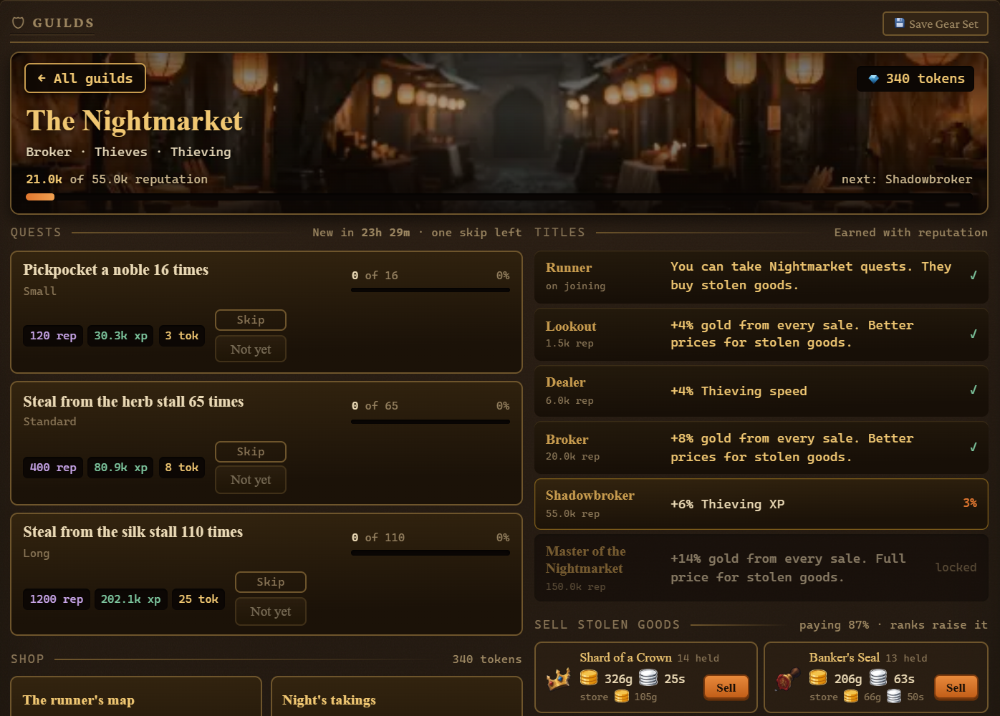

A dark-fantasy idle RPG with thirteen skills, twelve combat zones, ten guilds and a sea to chart. It keeps going with the window shut.

The Nightmarket · one of ten guildsWhat you cut down becomes what you build. What you build decides how deep you get. What you drag back out of the dark is what the best tools are made of.
Woodcutting, mining, fishing, foraging and farming feed smithing, cooking, alchemy, firemaking, jeweler and crafting. Agility and thieving sit off to one side doing their own thing.
Every skill has a 98-point passive tree, and 98 points is exactly enough to fill one. The order you take them in is the build.
Better tools mean faster actions and more from each one. The top tiers need drops you can only get by going and fighting for them.
One guild for every skill, plus the Nightmarket. Join and the board hands you work: kill these, gather that, bring back this many. Reputation earns titles, and the titles pay off in that guild's own skill.
The board rerolls daily. If a job is a slog you get one skip.